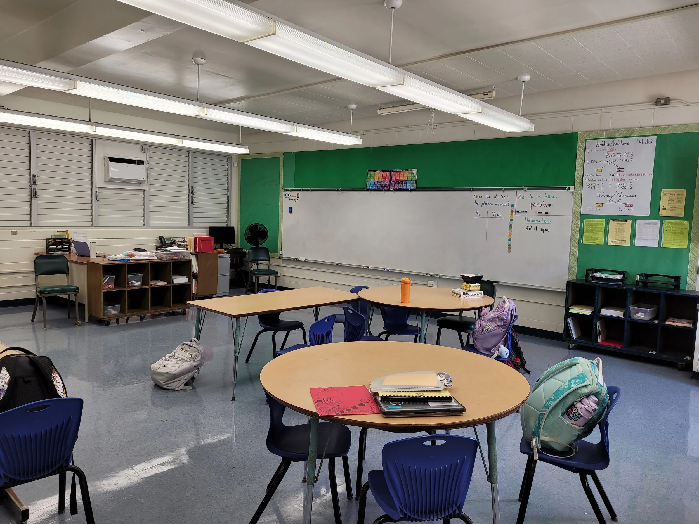
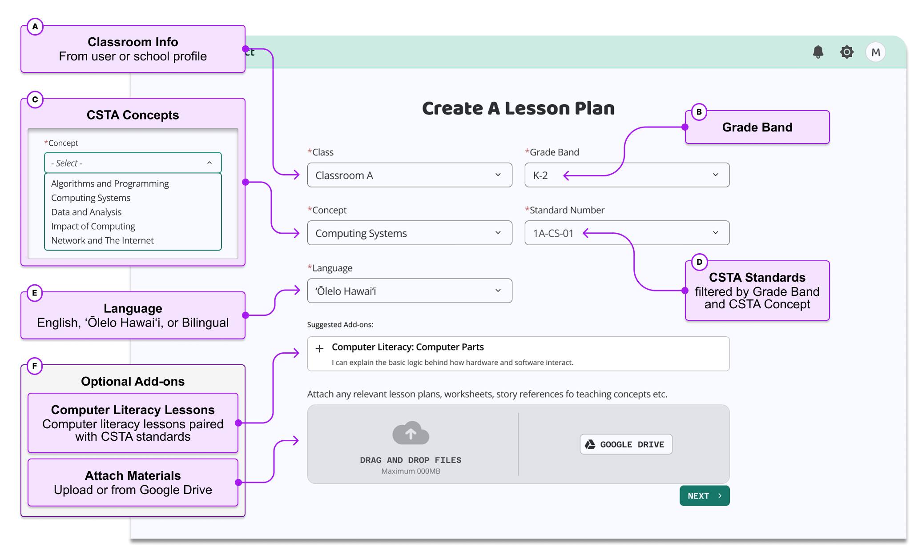
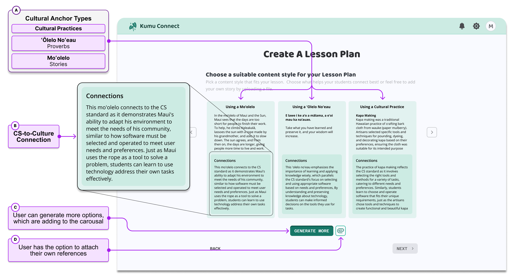
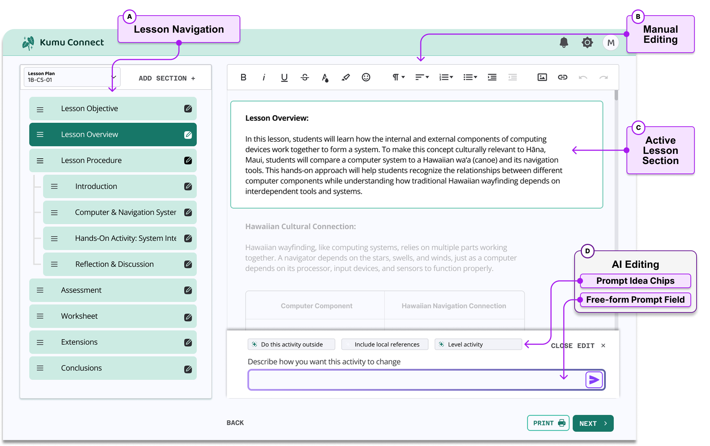
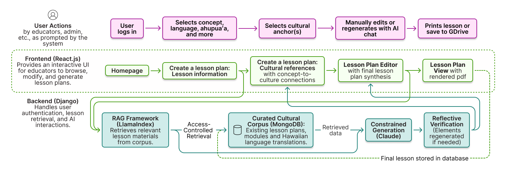

Kumu Connect
Empowering Hawaiian CS Education through Culturally Informed Tools for Teachers
★ Honorable Mention Published at IDC 2026 · read the paper →
The Context: Hawaiian Immersion Language Schools
Hawaiian Immersion Language Schools bring culturally relevant, place-based education to life, a practice proven to improve student engagement & learning by connecting lessons to students’ lived experiences & heritage.
The Challenge: Resource Gap for Endangered Languages
Immersion Language Schools of endangered languages face significant challenges due to the lack of resources to support culturally relevant teaching. For subjects such as Computer Science, there are even fewer resources, especially in ‘Ōlelo Hawai‘i itself. This disparity disrupts students’ education, diminishing engagement and learning outcomes.
This two-year project unfolded in four phases, which I'll walk through below.

Phase 1: Foundational Research & Definition
We centered Hawaiian viewpoints in our own research methods, prioritizing trust-building and relationship-based practices, like site visits and talk story, over extractive ones.

Two five-day visits (fall 2023) let us build real relationships alongside the research: sitting in classrooms, attending cultural activities like hula and ukulele lessons, and joining a CS curriculum working session with Kaiapuni teachers. We deliberately didn't record or take notes during talk story sessions, prioritizing trust over data collection, and instead debriefed and coded our conversations immediately after.
A tension emerged: teachers, dealing with high turnover and frequent need for stand-ins, found CS education easy to deprioritize, while Hawai‘i's Department of Education was simultaneously mandating CS curricula statewide. Teachers valued CS education in principle but had neither the time nor resources to act on the mandate. That tension distilled into our first set of design requirements:
- F1. Stand-in teachers have varied backgrounds → D1. Accommodate a range of backgrounds/expertise
- F2. Frequent subbing creates discontinuity → D2. Serve as a centralized resource for teachers
- F3. Most teachers don't feel confident teaching CS → D3. Feel approachable, not overwhelming
- F4. Teachers are open to tools that save time → D4. Demonstrate immediate practical application
- F5. The ‘Ōlelo branch has fewer teaching resources → D5. Use language & references relevant to that branch
- F6. Place-based schools lean on low-tech solutions → D6. Align with existing teacher expectations
Phase 2: Concept Design & Evaluation
Three initial concepts came out of ideation: ClassCompass (real-time, place-based guidance for a substitute mid-class, dropped once we learned most subs don't have laptop access), Class Coverage (a sub-to-teacher hand-off platform with AI-assisted, editable lesson plans), and Smart Search (a worksheet generator pulling from existing ‘Ōlelo materials). Concept testing with teachers pointed clearly toward Class Coverage, so we merged it with pieces of Smart Search: stand-in coordination, resource centralization, and AI-assisted lesson generation in one flow.


We built an interactive Figma prototype around three features (a Coverage Request, Sub Plan Generation, and a Sub Plan Editor), then ran Wizard-of-Oz usability testing with 11 teachers.
The biggest usability issue was visual, not conceptual: our "binder" metaphor for the lesson editor confused teachers about what was static, generated, or editable. We redesigned it around a familiar text-editor model instead, with AI-generated content clearly highlighted and a dedicated panel for AI-assisted edits, closer to commenting in a shared doc than a black box.
“You guys listened! I love that! Where were you guys 10 years ago? I'm floored with what you guys came up with from the last time that we talked!” — P3
Phase 3: AI Model Research & Definition
With the mechanics validated, we shifted focus to defining Kumu Connect's actual AI model, starting with a fresh round of interviews and surveys, this time asking educators specifically about their experience with off-the-shelf generative AI tools like ChatGPT in their classrooms.
Two things came out of this. First, the real bottleneck wasn't the substitute hand-off moment on its own, it was that almost no one, substitute or full-time teacher, had good culturally-grounded CS material to begin with. The generation engine we'd been building for sub plans was exactly what regular lesson planning needed too, so the tool's audience simply grew to match the real size of the need. Second, educators described existing AI tools as useful for saving time but culturally misaligned and difficult to trust without training, which sharpened our design requirements considerably:
- Epistemological alignment — default to Hawaiian ways of knowing, not a Western template with culture added on top
- Cultural provenance — draw only from verified, trusted Hawaiian sources, with that attribution visible
- Hallucination reduction — never invent a mo‘olelo, proverb, or practice that doesn't exist
- Teacher agency — the educator remains the final authority over everything generated
Phase 4: AI Model Development & Evaluation
Kumu Connect's developed version follows a simple 3-step flow: (1) the educator selects grade band, CS concept, CSTA standard, and delivery language; (2) Kumu Connect generates three grounded cultural references, a mo‘olelo (story), an ‘Ōlelo No‘eau (proverb), and a cultural practice, each with a plain-language “connection” explaining how it illustrates the CS concept; (3) a full lesson is generated and refined, manually or with AI assistance, until the educator is satisfied.



On the backend, this runs on constrained generation over a corpus of verified Hawaiian sources and curricula our team built, followed by a reflective verification pass that checks every reference against that corpus before an educator ever sees it.

We evaluated this system with 36 educators across three Hawai‘i public schools, on four dimensions: cultural accuracy, CS-to-culture connection quality, pedagogical usefulness, and trustworthiness.
Educators with the strongest cultural knowledge rated output quality even higher, an average of 4.35 out of 5, which mattered a lot to us: the people best positioned to catch a fabricated or disrespectful reference were the ones most satisfied with what the system actually produced.
“This is beautiful. The story is related to where we are right now... I like this.” — P18, Kaiapuni educator
Reflection
Reflecting on this project from my journey as a UX designer, I've gathered insights that, while personal, I believe could resonate with others in the field. This experience has been a humbling reminder of the lessons I've carried with me—from my days as an ESL tutor understanding the power of culturally relevant education, to my involvement with Veggie Mijas, where I was introduced to decolonization efforts. It has reinforced my commitment to co-design with communities, ensuring that our collective efforts lead to solutions that are not just useful but meaningful.
- Decentering Western Perspectives: This project has reinforced the need to decenter Western perspectives in designing educational technology. It's about more than just adding cultural elements to a platform; it's about fundamentally rethinking how we define technology's role in education from the ground up.
- Prioritizing Trust: Building trust with the community has been paramount—more than any research objective. This project has been a constant reminder that trust is the bedrock of meaningful collaboration.
- Hyper-Local HCI and the Power of Specificity: Designing "for everyone" often means designing for the majority, which can exclude marginalized communities. My experiences have taught me the power of specificity in design.
This project has been a journey of learning, not just about the community I've had the privilege to work with but also about myself as a designer. It's a reminder that our work is not just about creating functional tools but about crafting experiences that honor and reflect the multifaceted lives of our users.